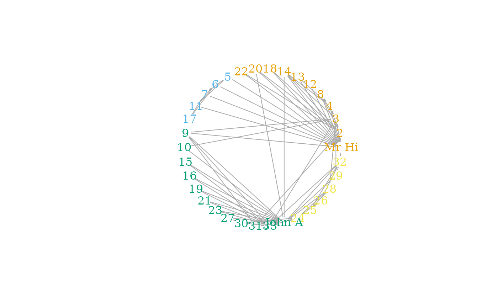

Place vertices on a circle, in the order of their vertex ids.
Usage
layout_in_circle(graph, order = V(graph))
in_circle(...)Details
If you want to order the vertices differently, then permute them using the
permute() function.
See also
Other graph layouts:
add_layout_(),
component_wise(),
layout_(),
layout_as_bipartite(),
layout_as_star(),
layout_as_tree(),
layout_nicely(),
layout_on_grid(),
layout_on_sphere(),
layout_randomly(),
layout_with_dh(),
layout_with_fr(),
layout_with_gem(),
layout_with_graphopt(),
layout_with_kk(),
layout_with_lgl(),
layout_with_mds(),
layout_with_sugiyama(),
merge_coords(),
norm_coords(),
normalize()
Author
Gabor Csardi csardi.gabor@gmail.com
Examples
## Place vertices on a circle, order them according to their
## community
library(igraphdata)
data(karate)
karate_groups <- cluster_optimal(karate)
#> This graph was created by an old(er) igraph version.
#> Call upgrade_graph() on it to use with the current igraph version
#> For now we convert it on the fly...
coords <- layout_in_circle(karate,
order =
order(membership(karate_groups))
)
V(karate)$label <- sub("Actor ", "", V(karate)$name)
V(karate)$label.color <- membership(karate_groups)
V(karate)$shape <- "none"
plot(karate, layout = coords)
